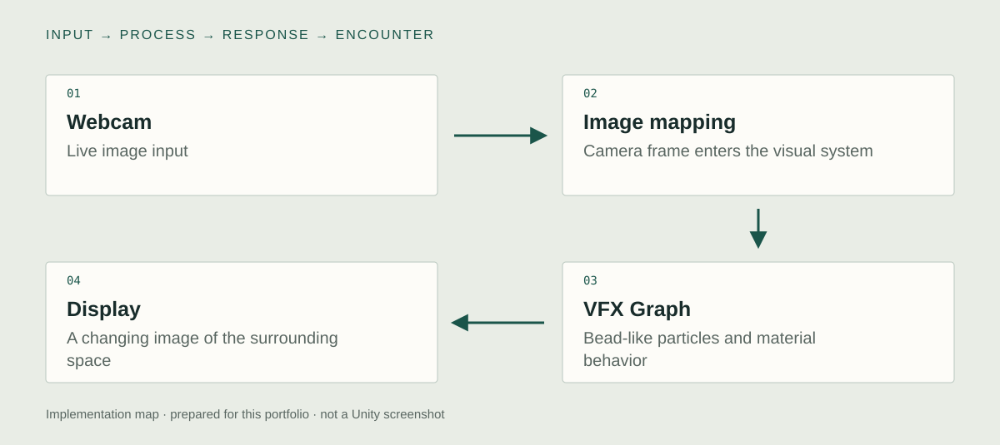

Unity implementation
Live webcam input
I connected live webcam imagery to the Unity visual system. The camera supplies a changing image of the person and surrounding space. Movement becomes input without requiring a separate handheld controller or an instructed gesture.

Webcam-to-VFX Graph mapping
I mapped the camera image into a bead-like VFX Graph field. The essential technical connection is the correspondence between the incoming image and the particle output. The original graph is needed to distinguish the exact sampling method and rendered particle primitive.
Readable live feedback
I developed the live particle presentation so the image remains connected to the person’s visible movement. The bead treatment fragments the surface while retaining a recognizable relation to the webcam source. Camera placement and display scale complete that feedback loop.
System & design decisions

- 01Webcam
Live image input
- 02Image mapping
Camera frame enters the visual system
- 03VFX Graph
Bead-like particles and material behavior
- 04Display
A changing image of the surrounding space
Image input and particle output
The important boundary is the mapping from a camera frame to the VFX Graph result. The image supplies a changing source rather than a sequence of pre-rendered effects.
Legibility within abstraction
The visual treatment has to preserve enough structure for a visitor to connect a movement with its visible trace. Particle form and image correspondence carry different parts of that feedback.
Concept
What remains of a person's presence when a camera image becomes a field of discrete visual units?
The installation treats an ordinary encounter with a camera as a temporary act of image-making. A figure can remain recognizable while its surface becomes fragmented and tactile. The work brings the passing visitor into the composition without requiring a separate instruction-heavy interface.
Development
Retrospective planning notes, prepared for this portfolio.
Choose the encounter
Begin with people passing through a camera's view rather than a formal start button.
Set the mapping
Compare the live source and its particle representation. Decide which image relationships should remain readable.
Judge the display
Assess recognition, scale, and movement from where a passerby actually sees the work.
Further research
How does image fragmentation change a visitor's recognition of their own movement?
Vary: Particle scale and the spatial resolution of the camera mapping.
Hold consistent: Camera position, live input, display size, and viewing distance.
Proposed comparison. No controlled study or measured effect is reported.